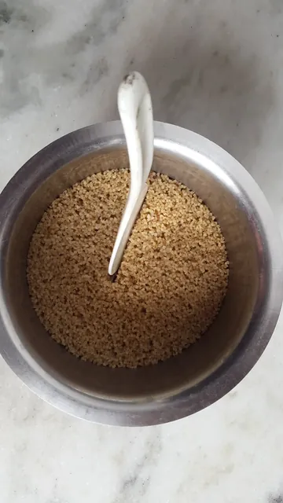
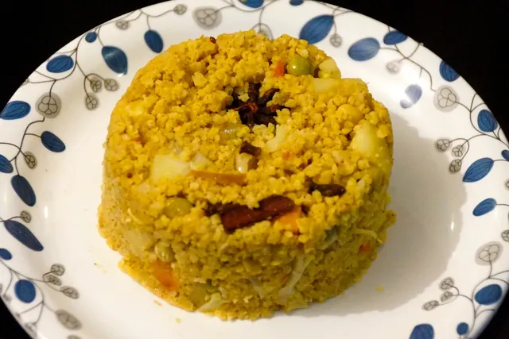
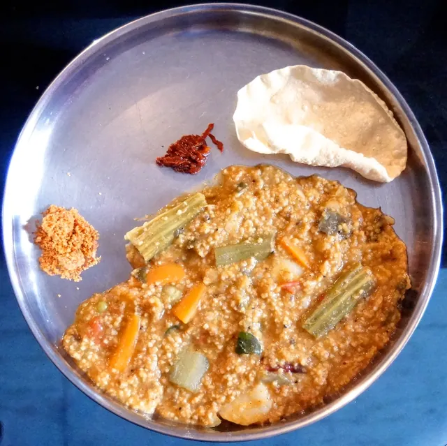
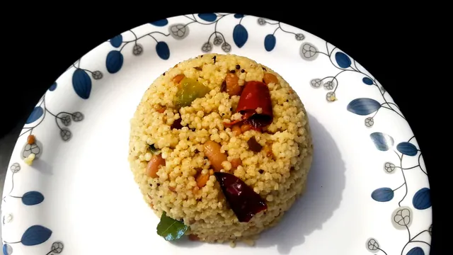
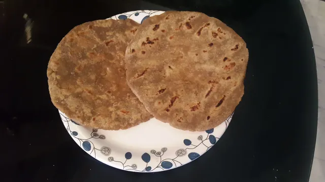
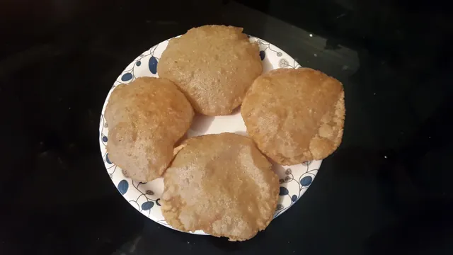
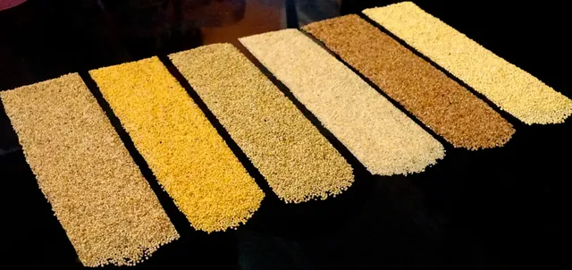
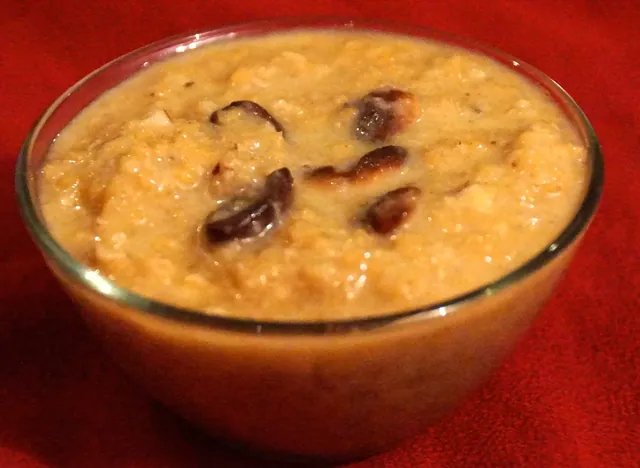

Everyday food.
A new grain.
Rice, idli, dosa, pongal, and more. Find something familiar to make from the Millets Zone recipe collection.
12 recipes to explore

Millet idli
Ingredients and preparation notes for Kodo and Barnyard millet idli.

Millet dosa
The source recipe for Kodo millet set dosa with poha, black gram and fenugreek.

Millet pongal
A Foxtail millet pongal recipe with split mung, cumin, pepper and curry leaves.

Millet rice
A guide to cooking millet rice, followed by khichidi, coconut rice and mango rice variations.

Millet biryani and pulav
Kodo millet pulav and biryani recipes using Foxtail and Little millet.

Millet bisi bele bath
A Kodo millet bisi bele bath recipe from the original cooking collection.

Millet lemon rice
A Foxtail millet lemon rice recipe with traditional seasoning.

Millet roti
Several ways to make flatbreads with millet flour, black gram and other source recipe ingredients.

Millet poori
Kodo millet poori made with wheat and jowar flours, fennel and salt.

Whole grain millet bread
A source bread recipe combining millet, whole wheat, seeds and yeast; ingredient inconsistencies are noted.

Millet sweets
Browntop millet payasam, millet laddu and Foxtail millet kheer from the source collection.
Foxtail millet cookies
The source lists four ingredients for Foxtail millet cookies; quantities and method were not provided.
No recipes found.
Try another grain or dish, or clear the filters.